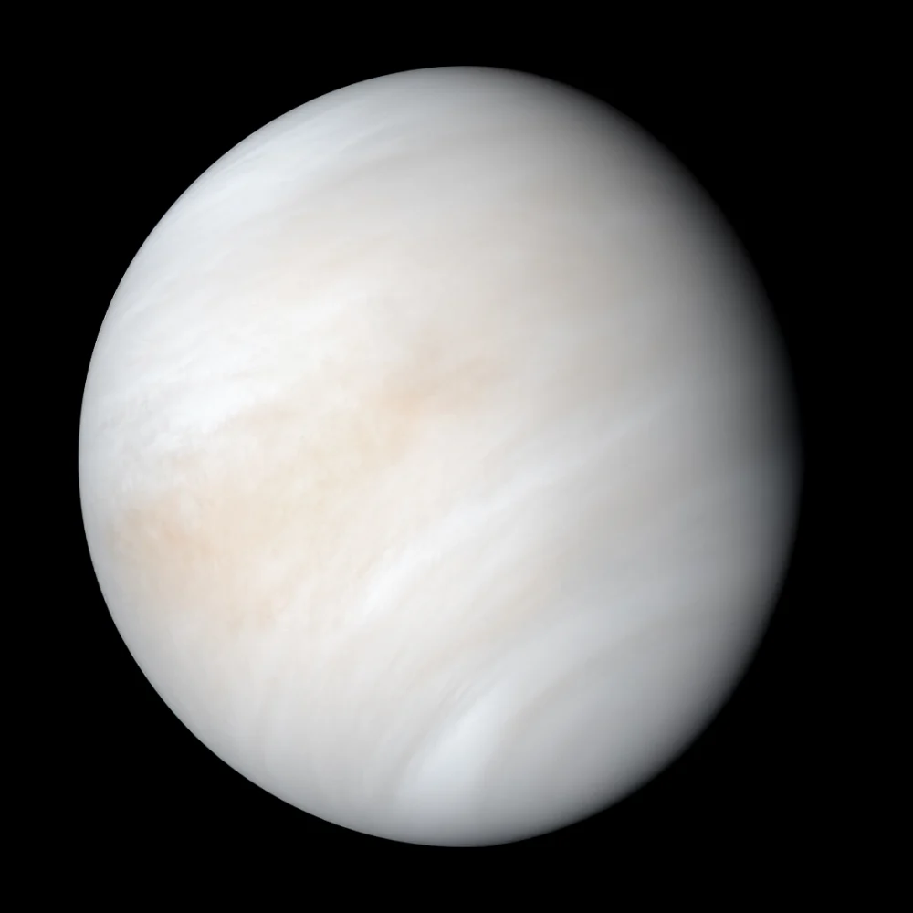

Our Solar System
Venus: Earth-sized, but hostile to life
Venus is a rocky planet almost as large as Earth: 0.95 Earth radii and 0.815 Earth masses. It orbits the Sun in 225 days at 0.72 AU. Its dense atmosphere is mostly carbon dioxide, with sulfuric acid clouds. The greenhouse effect makes it the hottest planet: 464 °C on average, at 92 bar surface pressure.
Venus shows that Earth-sized does not mean hospitable. It lies at the inner edge of the Sun's habitable zone. The discoverers of the exoplanet Gliese 12 b call it an “exo-Venus” because of its similar size and the similar energy it receives from its star; whether it has an atmosphere is not yet known.
Moons: Venus has no moons.
Sources: NASA (NSSDCA): "Planetary Fact Sheet – Metric.", accessed 2026-11-20; NASA (NSSDCA): "Planetary Fact Sheet – Ratio to Earth Values.", accessed 2026-11-20; NASA Science: "Venus: Facts.", accessed 2026-11-20; NASA Science: "What Is the Habitable Zone?", accessed 2026-11-20; ESO: "Three Planets in Habitable Zone of Nearby Star" (eso1328, note 3)., accessed 2026-11-20; NASA Science: "NASA's TESS Finds Intriguing World Sized Between Earth, Venus.", accessed 2026-11-20; NASA: "NASA's DAVINCI Explores Ten Mysteries of Venus.", accessed 2026-11-20